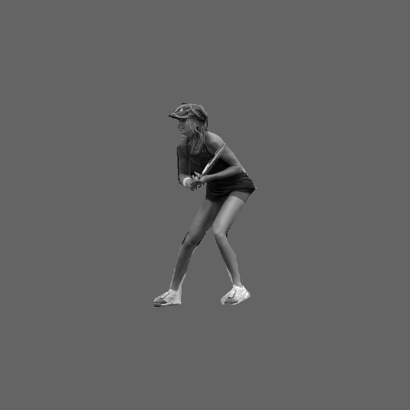
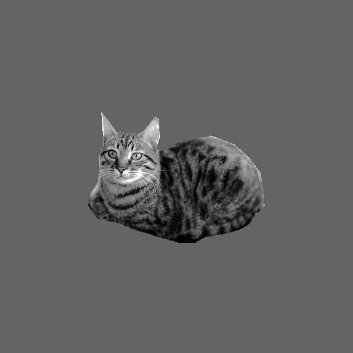
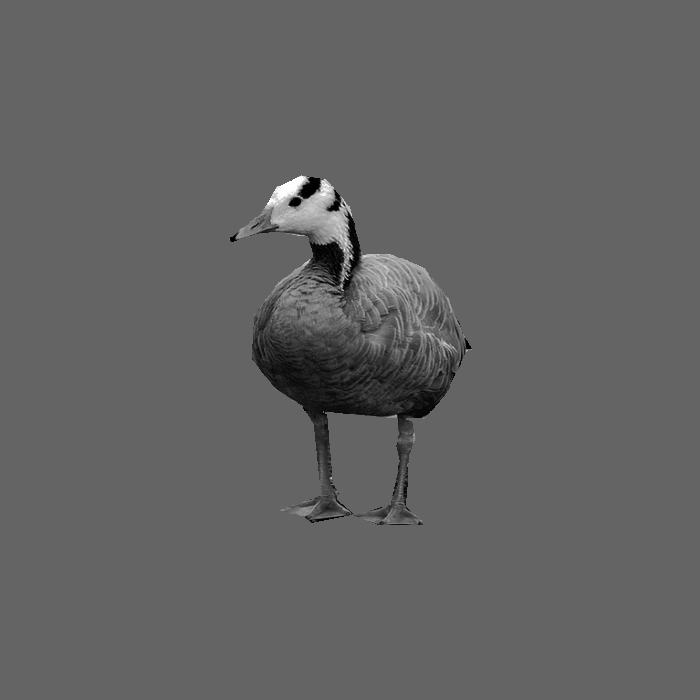
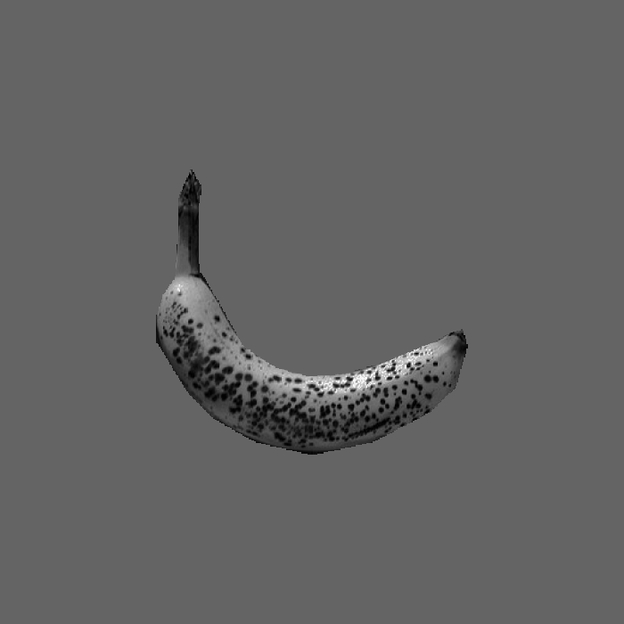
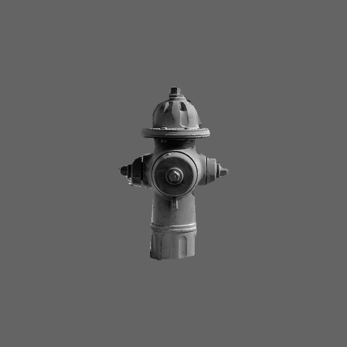
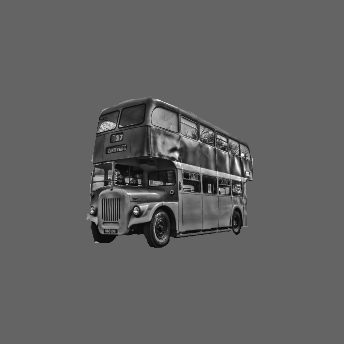
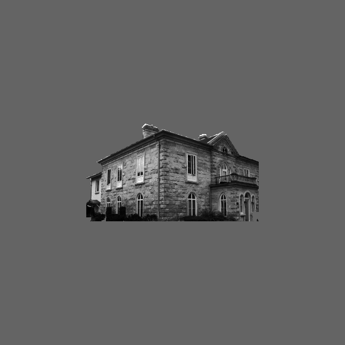
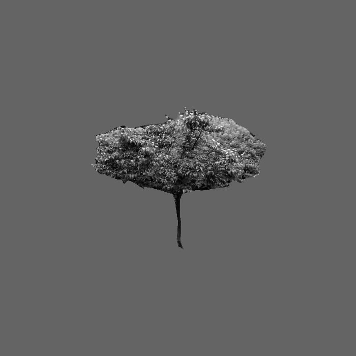

<!DOCTYPE html>
<html>
  <head>
    <title>My experiment</title>
    <script src="jspsych/jspsych.js"></script>
    <script src="img_stimuli.js"></script>
    <script src="shuffle_array.js"></script>  <!-- add the function that will shuffle correct answer-->
    <script src="jspsych/plugin-html-keyboard-response.js"></script>
    <script src="jspsych/plugin-image-keyboard-response.js"></script> 
    <script src="jspsych/plugin-survey-multi-select.js"></script> 
    <script src="jspsych/plugin-survey.js"></script> 
    <script src="jspsych/plugin-preload.js"></script>
    <link href="https://unpkg.com/jspsych@7.3.0/css/jspsych.css" rel="stylesheet" type="text/css" />
    <style>
        /* adding the style to align model images at the bottom */
        .div-wrapper { 
            position: relative;
            height: 200px;
            width: 300px;
        }
        .div-wrapper img {
            position: absolute;
            left: 0;
            bottom: 0;
        }
        /* adding style to create a grid-like display of images and their corresponding keys */
        .wrapper {
            display: grid;
            grid-template-columns: repeat(8, 1fr);
            gap: 10px;
            grid-auto-rows: 100px;
            grid-template-areas:
                "1 2 3 4 5 6 7 8"
                "9 10 11 12 13 14 15 16";
            /* align-items: center; */
            justify-items: center;
        }
    </style>
  </head>
  <body></body>
  <script>

    var id = Date.now() // create an idea for each run based on its time

    var jsPsych = initJsPsych({
        default_iti: 500,
        // here we declare within the initialization that we want this function to run at the end
        on_finish: function(){
            jsPsych.data.displayData(); //this is useful for directly debugging, probably not for real
            jsPsych.data.addProperties({ID: id}); // add the date as a data ID
            // jsPsych.data.get().localSave('csv', 'subject_' + id +'.csv'); // save data locally
        },
        
    });

    var timeline = [];

    // var preload = {
    //     type: jsPsychPreload,
    //     imaegs: filename
    // }

    // var preload = {
    //     type: jsPsychPreload,
    //     auto_preload: true
    // };
    // timeline.push(preload)


    // AT THE START: declare possible keys, answer array, and correct keys. these will be updated once the keyboard is chosen
    // NOTE: azerty is chosen by default. nothing changes if it is selected
    // declaring possible keys
    possible_keys = ['q', 's', 'd', 'f', 'j', 'k', 'l', 'm'];
    // declaring answer array
    ans_array = shuffle([possible_keys[0],possible_keys[1],possible_keys[2],possible_keys[3],possible_keys[4],possible_keys[5],possible_keys[6],possible_keys[7]]);
    // declaring correct keys
    var corr_keys = [
        { category: 'banana', key: ans_array[0]},
        { category: 'firehydrant', key: ans_array[1]},
        { category: 'bird', key: ans_array[2]},
        { category: 'building', key: ans_array[3]},
        { category: 'cat', key: ans_array[4]},
        { category: 'bus', key: ans_array[5]},
        { category: 'person', key: ans_array[6]},
        { category: 'tree', key: ans_array[7]}
    ]

    // Ask the participant to declare the keyboard they're using
    var keyboard_selection = {
        type: jsPsychSurvey,
        pages: [
            [
                {
                    type: 'multi-select',
                    prompt: `This will be used to assign response keys.`, 
                    name: 'KeyboardSelection', 
                    options: ['AZERTY', 'QWERTY'], 
                    required: true,
                    columns: 0,
                }
            ]
        ],
        title: "Please indicate the keyboard configuration you will be using during this experiment.",
        button_label_finish: 'Continue to the experiment',
        // update the answer keys & correct keys based on the participant answer IF QWERTY IS CHOSEN
        on_finish: function(data){
            if(jsPsych.data.getLastTrialData().values()[0].response.KeyboardSelection[0]==='QWERTY'){
                possible_keys = ['a', 's', 'd', 'f', 'j', 'k', 'l', ';'];
                // shuffle the array again
                ans_array = shuffle([possible_keys[0],possible_keys[1],possible_keys[2],possible_keys[3],possible_keys[4],possible_keys[5],possible_keys[6],possible_keys[7]]);
                corr_keys = [
                    { category: 'banana', key: ans_array[0]},
                    { category: 'firehydrant', key: ans_array[1]},
                    { category: 'bird', key: ans_array[2]},
                    { category: 'building', key: ans_array[3]},
                    { category: 'cat', key: ans_array[4]},
                    { category: 'bus', key: ans_array[5]},
                    { category: 'person', key: ans_array[6]},
                    { category: 'tree', key: ans_array[7]}
                ];
            }
        },
        data: {
            possible_keys: function(){return possible_keys},
            ans_array: function(){return ans_array},
            corr_keys: function(){return corr_keys}
        }
    };
    timeline.push(keyboard_selection)

    var welcome = {
        type: jsPsychHtmlKeyboardResponse,
        stimulus: "Welcome to this experiment. Press any key to begin.",
        // stimulus: `
        // Welcome!
        // ${console.log(yes)}
        // `,
        post_trial_gap: 0
    };
    timeline.push(welcome);

    var instructions_1 = {
        type: jsPsychHtmlKeyboardResponse,
        stimulus: `
        <h2> <b> Welcome! </b> </h2>
        <p> In this experiment, you will have to classify pictures based on the object they contain.</p>
        <p> Indicate to which category the object in the image belongs to <em>as fast as possible</em>.</p>
        <p> Objects will belong to one of eight possible categories:
            <br><b><i>People</i></b>
            <br><b><i>Cats</i></b>
            <br><b><i>Birds</i></b>
            <br><b><i>Bananas</i></b>
            <br><b><i>Fire hydrants</i></b>
            <br><b><i>Buses</i></b>
            <br><b><i>Buildings</i></b>
            <br><b><i>Trees</i></b>
        </p>
        <p> Here are some example images from each category: </p>
        <div>
         
         
         
        
        </div>
        <div>
            
            
            
            
        </div>
        <br><br>
        <p><i>Press any key to continue instructions.</i></p>
        `,
        post_trial_gap: 0
    };
    timeline.push(instructions_1)

    var instructions_2 = {
        type: jsPsychHtmlKeyboardResponse,
        // stimulus: ["text here", ans_array[0]],
        // stimulus:`
        //     <p> Use the keyboard to classify images as fast as you can. Take some time to remember the keys and place your fingers. </p>
        //     <p> Press the following keys to respond: </p>
        //     <p style='text-align:center;'>
        //         <br>Press <b style="text-transform:uppercase;">${function(){return ans_array[0]}} </b> for <b>bananas</b>
        //         <br>Press <b style="text-transform:uppercase;">${function(){return ans_array[1]}} </b> for <b>fire hydrants</b>
        //         <br>Press <b style="text-transform:uppercase;">${function(){return ans_array[2]}} </b> for <b>birds</b>
        //         <br>Press <b style="text-transform:uppercase;">${function(){return ans_array[3]}} </b> for <b>buildings</b>
        //         <br>Press <b style="text-transform:uppercase;">${function(){return ans_array[4]}} </b> for <b>cats</b>
        //         <br>Press <b style="text-transform:uppercase;">${function(){return ans_array[5]}} </b> for <b>buses</b>
        //         <br>Press <b style="text-transform:uppercase;">${function(){return ans_array[6]}} </b> for <b>people</b>
        //         <br>Press <b style="text-transform:uppercase;">${function(){return ans_array[7]}} </b> for <b>trees</b>
        //     </p>
        // <p> Note that the following reminder will be displayed at the bottom of the screen: </p>
        // <div class="wrapper">
        //     <div grid-area: 1> x.key === possible_keys[0]).category}.png' height='100'></div>
        //     <div grid-area: 2> x.key === possible_keys[1]).category}.png' height='100'></div>
        //     <div grid-area: 3> x.key === possible_keys[2]).category}.png' height='100'></div>
        //     <div grid-area: 4> x.key === possible_keys[3]).category}.png' height='100'></div>
        //     <div grid-area: 5> x.key === possible_keys[4]).category}.png' height='100'></div>
        //     <div grid-area: 6> x.key === possible_keys[5]).category}.png' height='100'></div>
        //     <div grid-area: 7> x.key === possible_keys[6]).category}.png' height='100'></div>
        //     <div grid-area: 8> x.key === possible_keys[7]).category}.png' height='100'></div>
        //     <div grid-area: 9;>${possible_keys[0]}</div>
        //     <div grid-area: 10;>${possible_keys[1]}</div>
        //     <div grid-area: 11;>${possible_keys[2]}</div>
        //     <div grid-area: 12;>${possible_keys[3]}</div>
        //     <div grid-area: 13;>${possible_keys[4]}</div>
        //     <div grid-area: 14;>${possible_keys[5]}</div>
        //     <div grid-area: 15;>${possible_keys[6]}</div>
        //     <div grid-area: 16;>${possible_keys[7]}</div>
        // </div>
        // <br>
        // <p><i>Press any key to begin the experiment</i>.</p>
        // `,
        stimulus: function() {
            return(
            '<p> Use the keyboard to classify images as fast as you can. Take some time to remember the keys and place your fingers. </p>' + 
            '<p> We will use eight keys that are easy to reach, see the coloured ones on the illustration below: </p>' + 
            '' + 
            '<p> Press the following keys to respond: </p>' + 
            '<p style="text-align:center;">' + 
                '<br>Press ' + ans_array[0] + '</b> for <b>bananas</b>' + 
                '<br>Press ' + ans_array[1] + '</b> for <b>fire hydrants</b>' + 
                '<br>Press ' + ans_array[2] + '</b> for <b>birds</b>' + 
                '<br>Press ' + ans_array[3] + '</b> for <b>buildings</b>' + 
                '<br>Press ' + ans_array[4] + '</b> for <b>cats</b>' + 
                '<br>Press ' + ans_array[5] + '</b> for <b>buses</b>' + 
                '<br>Press ' + ans_array[6] + '</b> for <b>people</b>' + 
                '<br>Press ' + ans_array[7] + '</b> for <b>trees</b>' + 
            "</p>"
        // <p> Note that the following reminder will be displayed at the bottom of the screen: </p>
        // <div class="wrapper">
            // <div grid-area: 1> x.key === possible_keys[0]).category}.png' height='100'></div>
        //     <div grid-area: 2> x.key === possible_keys[1]).category}.png' height='100'></div>
        //     <div grid-area: 3> x.key === possible_keys[2]).category}.png' height='100'></div>
        //     <div grid-area: 4> x.key === possible_keys[3]).category}.png' height='100'></div>
        //     <div grid-area: 5> x.key === possible_keys[4]).category}.png' height='100'></div>
        //     <div grid-area: 6> x.key === possible_keys[5]).category}.png' height='100'></div>
        //     <div grid-area: 7> x.key === possible_keys[6]).category}.png' height='100'></div>
        //     <div grid-area: 8> x.key === possible_keys[7]).category}.png' height='100'></div>
        //     <div grid-area: 9;>${possible_keys[0]}</div>
        //     <div grid-area: 10;>${possible_keys[1]}</div>
        //     <div grid-area: 11;>${possible_keys[2]}</div>
        //     <div grid-area: 12;>${possible_keys[3]}</div>
        //     <div grid-area: 13;>${possible_keys[4]}</div>
        //     <div grid-area: 14;>${possible_keys[5]}</div>
        //     <div grid-area: 15;>${possible_keys[6]}</div>
        //     <div grid-area: 16;>${possible_keys[7]}</div>
        // </div>
        // <br>
        // <p><i>Press any key to begin the experiment</i>.</p>
        );},
        post_trial_gap: 0
    };
    timeline.push(instructions_2)

    var trial_count = 0

    var break_trial = {
        type: jsPsychHtmlKeyboardResponse,
        stimulus: `
        <p> Take a short break. Press <b>C</b> to continue. </p>
        `,
        choices: 'c'
    }

    var break_conditional = {
        timeline: [break_trial],
        conditional_function: function() {
            // increment trial count - in first run through the timeline variables procedure, trial_count will be equal to 1
            trial_count++;
            if (trial_count % 10 == 0) {
            // if the trial count is divisible by 96, then run the break trial
            return true;
            } else {
            // otherwise skip the break trial
            return false;
            }
        }
    };

    var fixation = {
        type: jsPsychHtmlKeyboardResponse,
        stimulus: '+',
        choices: "NO_KEYS",
        trial_duration: 500,
        data: 'fixation',
        post_trial_gap: 0,
        trial_duration:500
    };

    // adding a randomly long blank interval before image presentation
    var jitter = {
        type: jsPsychHtmlKeyboardResponse,
        stimulus: '',
        choices: "NO_KEYS", //specifies that no keyboard answer will be accepted
        trial_duration: function(){
            return jsPsych.randomization.sampleWithoutReplacement([0, 25, 50, 75, 100, 125, 150, 175, 200, 225, 250, 275, 300], 1)[0];
        }, // this function picks up one duration value at random
        data: 'fixation' // here we tag the fixation with a relevant name, useful to remove its data later
    };

    var classification_trial = {
        type: jsPsychImageKeyboardResponse,
        stimulus: jsPsych.timelineVariable('filename'),
        prompt: `
            <div class="wrapper">
                <div grid-area: 1> x.key === possible_keys[0]).category}.png' height='100'></div>
                <div grid-area: 2> x.key === possible_keys[1]).category}.png' height='100'></div>
                <div grid-area: 3> x.key === possible_keys[2]).category}.png' height='100'></div>
                <div grid-area: 4> x.key === possible_keys[3]).category}.png' height='100'></div>
                <div grid-area: 5> x.key === possible_keys[4]).category}.png' height='100'></div>
                <div grid-area: 6> x.key === possible_keys[5]).category}.png' height='100'></div>
                <div grid-area: 7> x.key === possible_keys[6]).category}.png' height='100'></div>
                <div grid-area: 8> x.key === possible_keys[7]).category}.png' height='100'></div>
                <div grid-area: 9;>${possible_keys[0]}</div>
                <div grid-area: 10;>${possible_keys[1]}</div>
                <div grid-area: 11;>${possible_keys[2]}</div>
                <div grid-area: 12;>${possible_keys[3]}</div>
                <div grid-area: 13;>${possible_keys[4]}</div>
                <div grid-area: 14;>${possible_keys[5]}</div>
                <div grid-area: 15;>${possible_keys[6]}</div>
                <div grid-area: 16;>${possible_keys[7]}</div>
            </div>`,
        // choices: [ans_array[0], ans_array[1], ans_array[2], ans_array[3], ans_array[4], ans_array[5], ans_array[6], ans_array[7]],
        choices: function() {
            if(jsPsych.data.get().values()[0].response.KeyboardSelection[0] === 'AZERTY'){
                return ['q', 's', 'd', 'f', 'j', 'k', 'l', 'm'];
            } else {
                return ['a', 's', 'd', 'f', 'j', 'k', 'l', ';'];
            }
        },
        data: {
            task: 'response',
            category: jsPsych.timelineVariable('category'),
            manipulation: jsPsych.timelineVariable('manipulation')
        },
        on_finish: function(data){ //this function calculates online whether the answer is correct or not
            // data.correct_response = corr_keys[jsPsych.timelineVariable('category')];
            data.correct_response = corr_keys.find(x => x.category === jsPsych.timelineVariable('category')).key;
            data.correct = jsPsych.pluginAPI.compareKeys(data.response, data.correct_response);
        },
        trial_duration: 10000,
        stimulus_duration: 150
    };
    
    var classification_procedure = {
        timeline: [break_conditional, fixation, jitter, classification_trial],
        timeline_variables: img_stimuli,
        // repetitions: 2,
        randomize_order: true
    };

    timeline.push(classification_procedure)

    var end_message = {
        type: jsPsychHtmlKeyboardResponse,
        stimulus: `
        <p> Thank you for taking part, the experiment is now over!</p>
        <p> Press any key to finish.</p>
        `,
        post_trial_gap: 500
    };
    timeline.push(end_message);


    jsPsych.run(timeline);

    </script>
    </html>